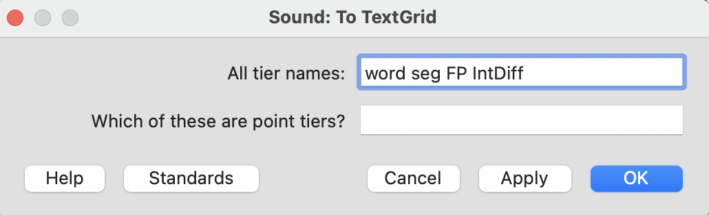
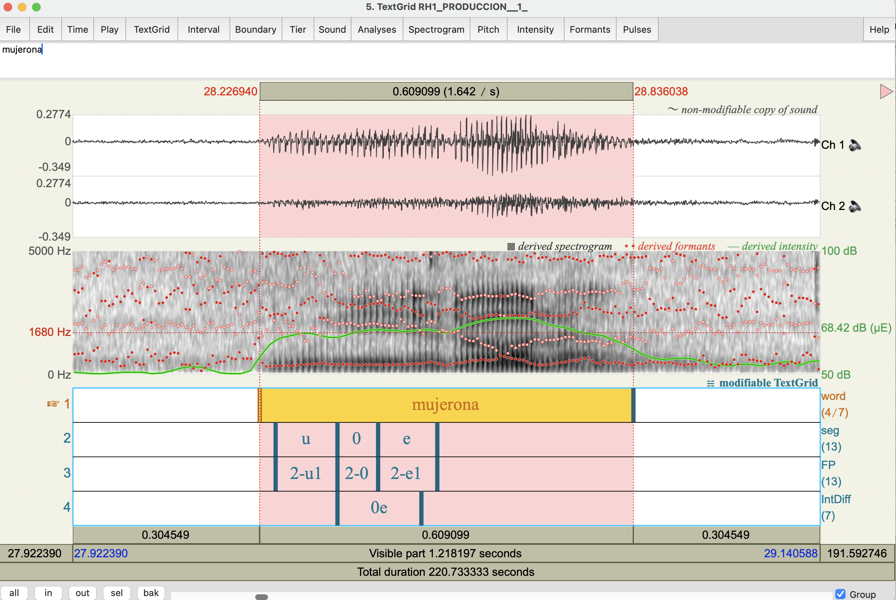
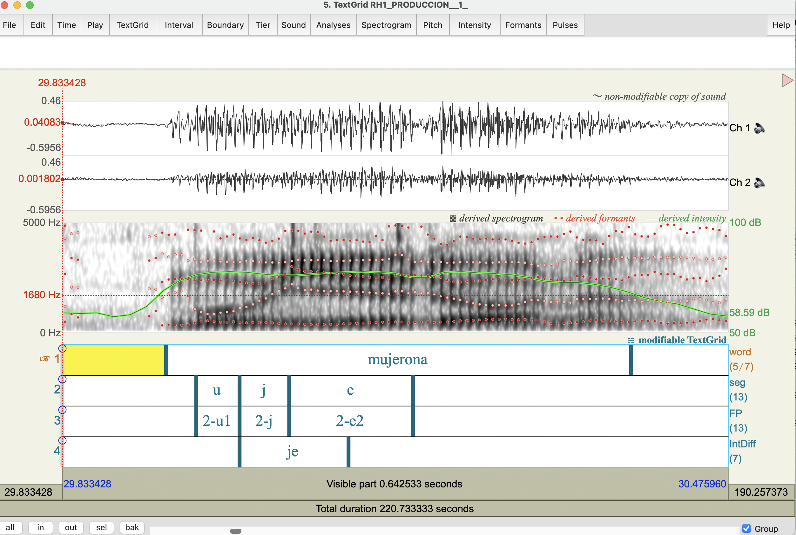

In Portuñol, the phonological target /ʎ/ is realized in different ways. The surface realization will be either:
| Realization | Symbol | Description | Audio example |
|---|---|---|---|
| [ʎ] | L | Palatal lateral approximant: reduced intensity relative to vowels; weak formants; no strong frication | |
| [lj] | lj | Lateral followed by glide: two phase structure; early vowel/glide; bi-phasic intensity contour | — |
| [j] | j | Palatal approximant: glide; strong formants; intensity similar to vowels; flat intensity | |
| [l] | l | Alveolar lateral approximant: no palatal cues; alveolar like formants; mid-level intensity | |
| [ʃ] | S | Voiceless palato-alv sibilant: audible frication; little or no formant; intensity may be high | |
| [ʒ] | Z | Voiced palato-alv sibilant: audible frication; voice bar; little or no formant; intensity may be high | |
| 0 | 0 | Deletion: Vowel-to-vowel transition; near-zero duration | — |
You will be working with a sound file and creating a TextGrid in Praat. The way you do this is by:

Word tier
This tier will have boundaries for the onset and offset of the word. The word segment will be labelled with the target word as it appears in the word list. This is the predicted pronunciation of the Portuñol target. Please stick to the spelling of this Portuñol target and NOT the realization that the speaker actually produces. For example, a speaker might produce the word “mujerengo” as [muʃerego], but the word tier should say “mujerengo.”
Seg tier
This is the segment tier. This is a veryimportant tier. We will be segmenting the V-C-V as the target. The Cs will be one of the /ʎ/ realizations above. It is important that we LISTEN CAREFULLY at the VCV and select the correct realization of the C. Segmentation will be hard, so listening multiple times will be essential. Consulting with Profs. Machado or Narayan will be important for problematic tokens (of which there will be many!).
FP tier
This tier will be a copy of the seg tier, but labelled differently. This tier will be used for the FormantPro script which will be run on the TextGrid/Sounds after the annotation. When these are labeled add the word number followed by the segment label. For example, for the word “ojo”, which is word #5, the VCVs should be labelled 5-o1, 5-C, 5-o2, with “C” being the consonant realization, so it might be 5-o1, 5-lj, 5-o2. The “o1” and “o2” are “V1” and “V2” so we know which vowel we’re talking about.
IntDiff tier
This tier will be used with Prof. Beristain’s IntDiff Praat script, which computes the intensity differnce between the C and the following vowel. For this segmentation, the borders should capture the minimum intensity of the C and the maximum intensity of the following V. The segmentation here does not need to be exact but it should capture these max and min intensities in the region that is bordered. The IntDiff tier should be labelled with the C and the following V2. So with a word like “mujerona”, this tier would be labeled “je.”
Below is an example of what the TextGrid + sound will look like after annotation for the sound “mujerona” (with deletion of the consonant).
Please watch this video as it shows the step-by-step procedure. It also shows a 0 (deletion) of the target C. This video shows the very next production that has the clear glide
“Mujerona” with deletion

“Mujerona” with clear glide (see F2 positive slope)

\